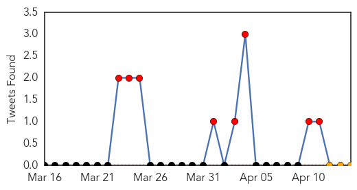
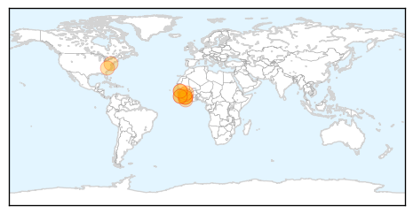

30 Day Trends
Web: 25 alerts, 0 warnings
Twitter: 8 alerts, 0 warnings
Top Articles:
- 1.000
- Guinea Ebola outbreak under control
- 1.000
- As Ebola outbreak spreads, vaccine remains years away
- 1.000
- Ebola epidemic worst in years
- 1.000
- CRS responds to deadly ebola outbreak in West Africa - Guinea
- 0.999
- Guinea's first Ebola survivors return to family, stigma remains
- 0.999
- Health workers in Guinea's capital to hunt for Ebola cases
- 0.999
- Ebola in Guinea: Dr. Sanjay Gupta reports on the outbreak
- 0.998
- Case numbers edge upward in West Africa Ebola outbreak
- 0.997
- Kenya : Mob attacks Ebola treatment centre in Guinea, suspected cases reach Mali
- 0.997
- A swift, effective and bloody killer
- 0.956
- We need precautionary measures against Ebola – Pharmaceutical Society
- 0.912
- Liberia and Senegal Close Land Borders with Guinea-a New Issue in the West African Society
Top Tweets:
-
No tweets found for Apr 14, 2014
Web/News Articles

Tweets
Article Locations
Article Confidences